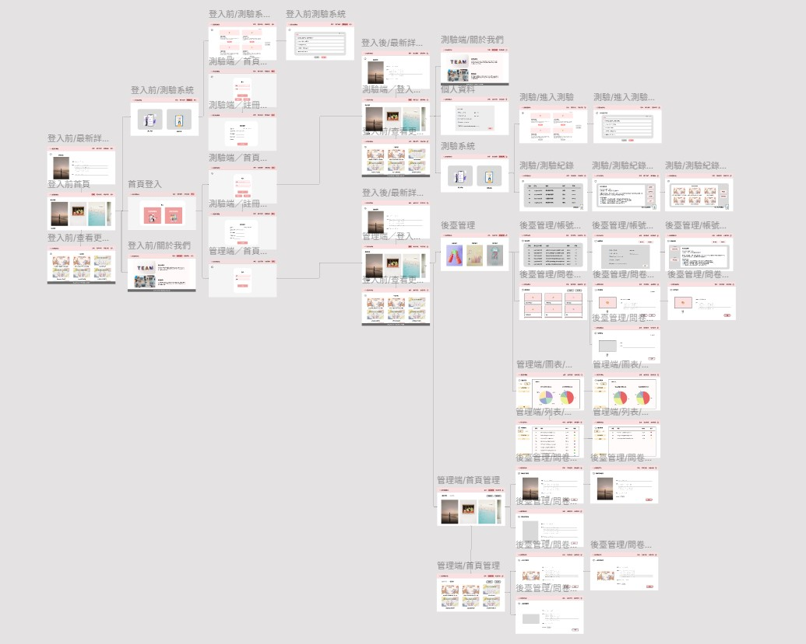
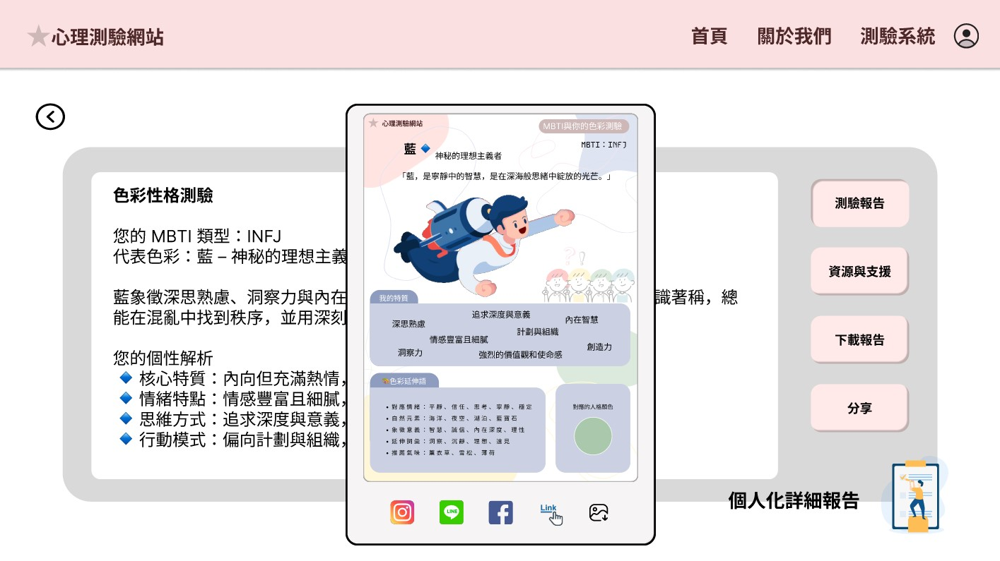
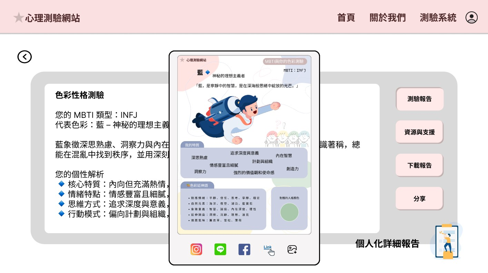
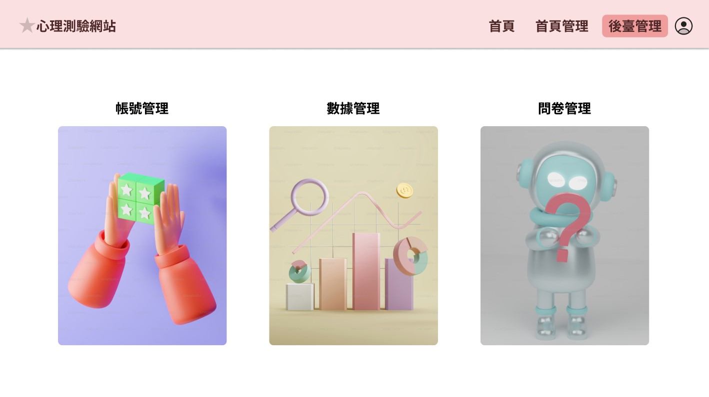
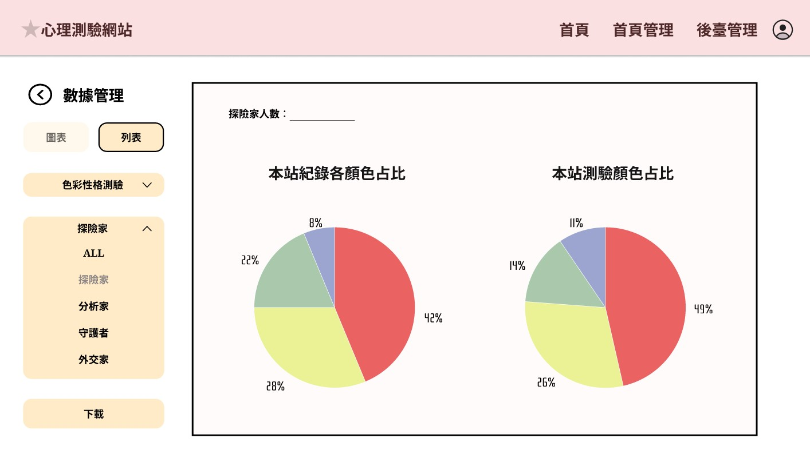

FIGMA作品展示
《MBTI × 色彩心理學測驗系統介面設計》
作品說明
隨著心理測驗在社群平台間日益盛行，尤其是 MBTI 與色彩心理學類型的內容廣受年輕族群關注，我們小組以「我的 MBTI 是什麼顏色？」為主題，開發一款結合 MBTI 與色彩心理的互動網站。透過有趣的測驗形式，引導使用者探索自我性格與對應色彩，進一步促進社群間的交流與分享。此系統不僅強化資訊傳遞與互動性，也具備教育與娛樂雙重功能。
我的角色
- 從使用者流程出發，協助團隊功能規劃與網站介面
- 使用 FIGMA 製作視覺原型，提升團隊溝通效率
- 撰寫介面文案與專案說明，強化內容清晰度
- 展現資訊整合、視覺設計與跨部門溝通的實務能力

流程草稿圖
 

測試端成果圖（左為測驗系統頁面，右為測驗分享小卡）


管理端成果圖（左為主要功能頁面，右為數據管理頁面）